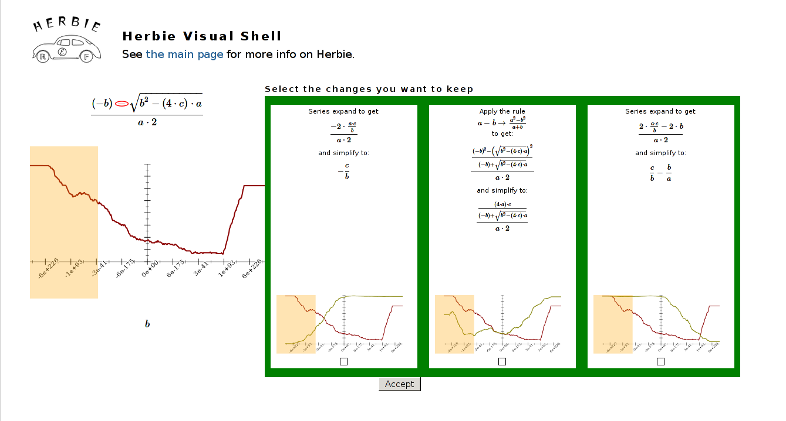

Alex Sanchez-Stern asnchstr@uw.edu

Floating point rounding errors are notoriously difficult to detect and debug. By identifying the input regions for which error is high, and applying rewrites and taylor expanding at focused locations, the Herbie tool can automatically improve the accuracy of floating point expressions. But this process is complex for humans to understand a replicate. The Herbie Interactive Exploration allows users to get inside the inner workings of Herbie, and learn how it improves the accuracy of floating point programs, as well as how they might improve accuracy by hand.
This project uses the Herbie tool as a submodule, so when you clone it you'll want to use git clone --recursive http://github.com/CSE512-15S/fp-asnchstr. If you'd rather clone it the normal way, or have already cloned it, just run make deps to install the submodule.
To run the Herbie server and tool, you'll neet Racket, which is available at www.racket-lang.org.
make run will run the server on localhost:3234/viz/. Navigate to this page with a web browser to interact with the Herbie Interactive Exploration.
Alternatively, you can navigate to my personal server where the Herbie Interactive Exploration will be (hopefully) running from June 8th, 2015 to June 12th, 2015.